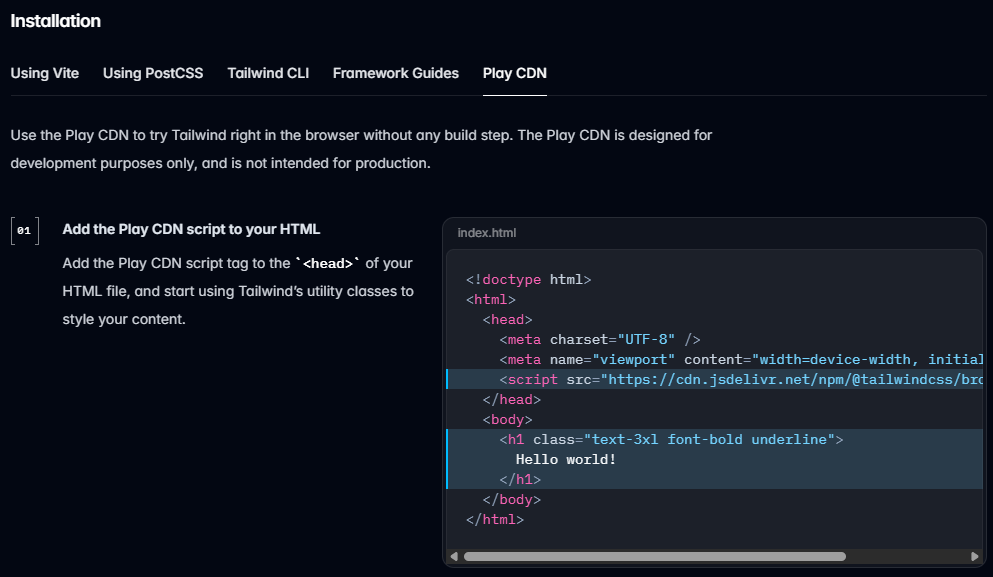

Tailwind CSS é um framework utilitário para estilização rápida e moderna de sites.
Há várias formas de instalar o Tailwind CSS, incluindo via npm, CDN e outras opções:
Via CDN para testes rápidos:
<script src="https://cdn.tailwindcss.com"></script>Adicione classes utilitárias diretamente no HTML:
<button class="bg-blue-500 text-white px-4 py-2 rounded">Clique aqui</button>Você pode usar qualquer cor em formato hexadecimal, rgb, rgba, hsl, hsla:
bg-blue-500
bg-[#ff00ff]
bg-[rgb(34,197,94)]
bg-[rgba(59,130,246,0.7)]
bg-[hsl(48,100%,50%)]
bg-[hsla(262,80%,60%,0.7)]
Use valores personalizados para largura, altura, margem, etc:
w-20 h-4
w-[88px] h-[18px]
w-10 h-8
w-[42px] h-[72px]
w-[10px] h-[72px] m-[3.5rem]